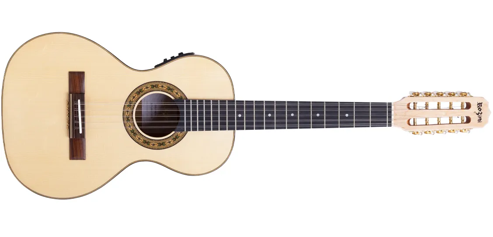

Rozini Dourada Cinturada RV217 Viola

- Madeiras / materiais
- Fundo e Laterais: Maple - Tambo: Spruce
- Identificação
- ROZINI
Viola Rozini Dourada Cinturada RV217, uma adição Linha Dourada, luxo e a elegância na música. Com um design deslumbrante e um acabamento brilhante que reflete a luz como ouro puro, esta viola é uma verdadeira obra de arte. Seu tampo maciço em Spruce proporciona uma sonoridade rica e vibrante, enquanto os detalhes em mosaico em marchetaria conferem um toque de requinte incomparável.
Construída com laterais e fundo laminados em Maple para garantir durabilidade excepcional, a Viola Rozini Dourada Cinturada RV217 ostenta um bordo dourado que adiciona um brilho luxuoso, elevando cada performance a um novo patamar de sofisticação. Com braço de CEDRO e escala de PURPLE HEART, cada nota ressoa com uma profundidade e clareza que cativam os sentidos. Equipada com captação Fishman Presys + ou Fishman Presys Blend para uma amplificação impecável (mas também na versão Acústica), experimente a sensação de tocar na excelência com a Viola Rozini Dourada Cinturada RV217, onde a sonoridade envolvente encontra-se com uma estética de ouro e luxo, tornando cada momento de música uma experiência verdadeiramente magnífica.